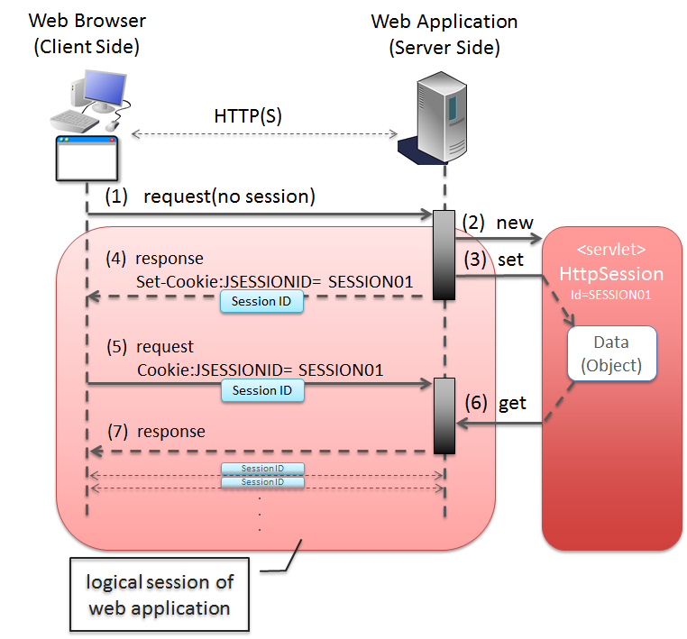
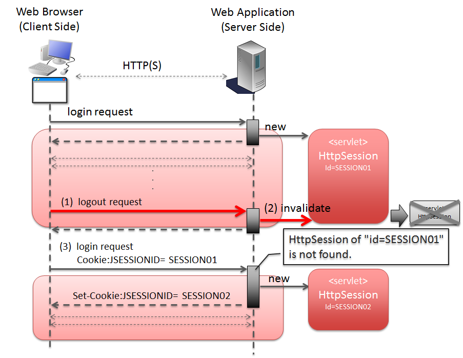
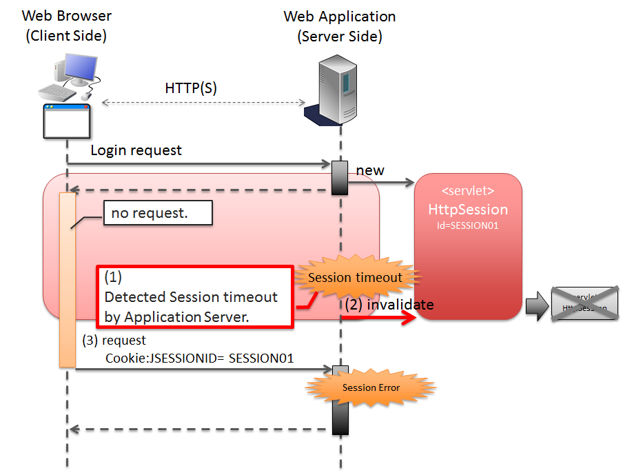
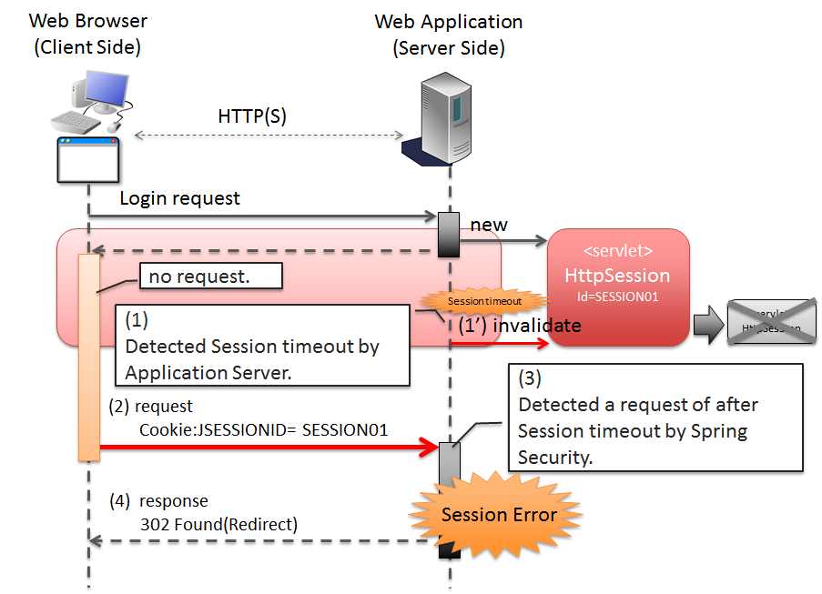

4.3. セッション管理¶
目次
4.3.1. Overview¶
本節では、Webアプリケーションのセッション管理について説明する。
Picture - Establishment of logical session
項番 説明 HttpSessionオブジェクトを生成する。HttpSessionオブジェクトを生成したタイミングで、セッションIDが払い出される。HttpSessionオブジェクトに格納する。HttpSessionオブジェクトを取得し、リクエストに関連づける。HttpSessionオブジェクトから、(1)のリクエストで格納したデータを取得する。リクエストをまたいで、同じデータにアクセスすることができる。Note
セッションIDを連携するためのパラメータ名について
Jakarta EE（Java EE）のSerlvetの仕様では、セッションIDを連携するためのパラメータ名のデフォルトは、「JSESSIONID」となっている。
{kind=link}
4.3.1.1. セッションのライフサイクル¶
Note
以降の説明で登場する
セッションは、Servlet APIより提供されているjavax.servlet.http.HttpSessionオブジェクトの事である。HttpSessionオブジェクトは、上記で説明した論理的なセッションを表現するJavaオブジェクトである。
4.3.1.1.1. セッションの生成¶
本ガイドラインで推奨している方法でWebアプリケーションを作成した場合、以下のいずれかの処理でセッションが生成される。
項番 説明
RedirectAttributesインタフェースのaddFlashAttributeメソッドを使用して、リダイレクト先のリクエストにモデル（フォームオブジェクトやドメインオブジェクトなど）を引き渡す処理。既にセッションが確立されている場合は、新たなセッションは生成されない。RedirectAttributesおよびFlash scopeについての詳細は、リダイレクト先にデータを渡すを参照されたい。
@SessionAttributesアノテーションを使用して、モデル（フォームオブジェクトや、ドメインオブジェクトなど）をセッションに格納する処理。指定したモデル（フォームオブジェクトや、ドメインオブジェクトなど）がセッションに格納される。既にセッションが確立されている場合は、新たなセッションは生成されない。@SessionAttributesアノテーションの使用方法については、@SessionAttributesアノテーションの使用を参照されたい。
Note
上記の項番4, 5, 6については、セッションの使用有無はControllerの実装によって指定するが、セッションの生成タイミングは、フレームワークによって制御される。 つまり、Controllerの処理として
HttpSessionのAPIを直接使用する必要はない。
4.3.1.1.2. セッションへの属性格納¶
本ガイドラインで推奨している方法でWebアプリケーションを作成した場合、以下のいずれかの処理でセッションに属性(オブジェクト)が格納される。
項番 説明
RedirectAttributesインタフェースのaddFlashAttributeメソッドを使用して、リダイレクト先のリクエストにモデル（フォームオブジェクトやドメインオブジェクトなど）を引き渡す処理。RedirectAttributesインタフェースのaddFlashAttributeメソッドの引数に指定したオブジェクトが、セッション上に存在するFlash scopeという領域に格納される。RedirectAttributesおよびFlash scopeについての詳細は、リダイレクト先にデータを渡すを参照されたい。
@SessionAttributesアノテーションを使用して、モデル（フォームオブジェクトや、ドメインオブジェクトなど）をセッションに格納する処理。指定したモデル（フォームオブジェクトや、ドメインオブジェクトなど）がセッションに格納される。@SessionAttributesアノテーションの使用方法については、@SessionAttributesアノテーションの使用を参照されたい。
Note
オブジェクトをセッションに格納するタイミングはフレームワークによって制御されるため、Controllerの処理として
HttpSessionオブジェクトのsetAttributeメソッドを呼び出すことはない。
4.3.1.1.3. セッションからの属性削除¶
本ガイドラインで推奨している方法で、Webアプリケーションを作成した場合、以下のいずれかの処理でセッションから属性(オブジェクト)が削除される。
項番 説明
RedirectAttributesインタフェースのaddFlashAttributeメソッドの引数に指定したオブジェクトが、セッション上に存在するFlash scopeという領域から削除される。
SessionStatusオブジェクトのsetCompleteメソッドを呼び出した後のフレームワークの処理。@SessionAttributesアノテーションで指定したオブジェクトがセッションから削除される。Note
セッションからオブジェクトを削除するタイミングはフレームワークによって制御されるため、Controllerの処理として
HttpSessionオブジェクトのremoveAttributeメソッドを呼び出すことはない。
4.3.1.1.4. セッションの破棄¶
本ガイドラインで推奨している方法で、Webアプリケーションを作成した場合、以下のいずれかの処理でセッションが破棄される。
項番 説明
明示的に破棄する際のイメージを、以下に示す。
Picture - Invalidate session by processing of Web Application
項番 説明 HttpSessionオブジェクトを破棄する。この時点でサーバ側には、SESSION01というIDのHttpSessionオブジェクトが消滅する。HttpSessionオブジェクトが存在しないため、別のセッションを生成する。上記例では、セッションIDが、SESSION02のセッションを生成している。
{kind=link}
タイムアウトによって、自動的に破棄される際のイメージを、以下に示す。
Picture - Invalidate session by Application Server
項番 説明 HttpSessionオブジェクトが存在しないため、セッションタイムアウトエラーをWebブラウザに返却する。Note
セッションタイムアウトの設計
セッションにデータを格納する場合は、必ずセッションタイムアウトの設計を行うこと。特に、格納するデータのサイズが大きくなる場合は、タイムアウトは、可能な限り短く設定することを推奨する。
Note
デフォルトのセッションタイムアウト時間について
デフォルトのセッションタイムアウト時間は、アプリケーションサーバによって異なる。
- Tomcat : 1800 秒 (30分)
- WebLogic : 3600 秒 (60分)
- WebSphere : 1800 秒 (30分)
- JBoss : 1800 秒 (30分)
{kind=link}
4.3.1.1.5. セッションタイムアウト後のリクエスト検知¶
本ガイドラインで推奨している方法でWebアプリケーションを作成した場合、以下のいずれかの処理で、セッションタイムアウト後のリクエストを検知する。
項番 説明
HandlerInterceptorにて、セッションのタイムアウトチェックを行う処理を実装する必要がある。
Spring Securityから提供されているセッションチェック処理を使用して、セッションタイムアウトを検知する際のイメージについて、以下に示す。
Picture - Detected a request of after session timeout by Spring Security
項番 説明 HttpSessionオブジェクトが存在しないため、セッションタイムアウトエラーとする。Spring Securityのデフォルト実装では、エラー画面を表示するための、URLへのリダイレクト要求が応答される。Note
セッションのタイムアウトチェックの必要性
「セッションにデータが格納されていること」が事前条件となる処理については、必ずセッションのタイムアウトチェックを行うこと。 セッションのタイムアウトチェックを行わないと、処理で必要なデータが取得できないため、予期しないシステムエラーの発生や、想定外の動作を引き起こす可能性がある。
{kind=link}
4.3.1.2. セッションの利用について¶
Note
本ガイドラインでは、安易にセッションにデータを格納するのではなく、まずはセッションを使わない方針で検討し、本当に必要なデータのみセッションに格納することを推奨する。
Note
以下の条件にあてはまるデータについては、セッションにデータを格納した方がよい場合がある。
4.3.1.2.1. セッション利用時のメリットとデメリット¶
セッション利用時のメリットとデメリットは、以下の通りである。
メリット
- 複数の画面(複数のリクエスト)をまたいで、データを持ち回ることができるため、ウィザード画面のような複数の画面で、1つ処理を構成する場合に、簡単にデータが持ち回れる。
- 取得したデータをセッションに格納しておくことで、データの取得処理の実行回数を、減らすことができる。
デメリット
- 同一処理の画面を、複数のブラウザやタブで立ち上げた場合、互いの操作がセッション上に格納しているデータに干渉しあうため、データの整合性を保つことができなくなる。データの整合性を保つためには、同一処理の画面を複数立ち上げることができないように、制御する必要がある。データの整合性を保つための制御は、共通ライブラリから提供しているトランザクショントークンチェックを使用することで実現する事ができるが、ユーザビリティの低いアプリケーションとなってしまう。
- セッションは、通常アプリケーションサーバ上のメモリとして管理されるため、セッションに格納するデータの量に比例して、メモリの使用量も増大する。処理で使用されなくなったデータを残したままにすると、ガベージコレクションの対象外となり、メモリ枯渇の原因となるため、不要になった段階でセッションから削除する必要がある。セッションから不要となったデータを削除するタイミングについて、別途設計を行う必要がある。
- 処理で扱うデータをセッションに格納すると、APサーバのスケーラビリティを低下させる要因となりうる。
Note
APサーバをスケールアウトする場合、以下のいずれかの仕組みが必要となる。
- セッションをレプリケーションし、すべてのAPサーバでセッション情報を共有する。セッションをレプリケーションする場合は、セッションに格納されるデータの量とレプリケーション対象となるAPサーバの数に比例してレプリケーション処理にかかる負荷が高くなる。そのため、スケールアウトすることで、レスポンスタイムなどが劣化する可能性がある点に注意が必要となる。
- ロードバランサによって、同一セッション内で発生するリクエストを全て同じAPサーバに振り分ける。同じAPサーバに振り分ける場合は、APサーバがダウンした場合に別のAPサーバで処理を継続することができない。そのため、高い可用性(サービスレベル)が求められるアプリケーションでは使用できない可能性がある点に注意が必要となる。
それぞれの注意点を考慮した上で、スケールアウトする方法を判断すること。
4.3.1.2.2. セッションを利用しない時のメリットとデメリット¶
メリット
- サーバ側でデータを保持しないため、複数ブラウザや複数タブを使用しても、互いの操作が干渉することはない。そのため、同一処理の画面を複数立ち上げることもできるので、ユーザビリティが損なわれることはない。
- サーバ側でデータを保持しないため、持続的に使用するメモリの使用量を、抑えることができる。
- APサーバのスケーラビリティを低下させる要因が少なくなる。
デメリット
- サーバの処理で必要となるデータを、リクエストパラメータとして送信する必要があるため、画面表示に表示していない項目についても、hidden項目に指定する必要がある。そのため、JSPの実装コードが増える。これは、JSPタグライブラリを作成することで、最小限に抑えることが可能である。
- サーバの処理で必要となるデータを、すべてのリクエストで送信する必要があるため、ネットワーク上に流れるデータ量が増える。
- 画面表示に必要なデータを、その都度取得する必要があるため、データの取得処理の実行回数が増える。
4.3.1.3. セッションに格納するデータについて¶
セッションに格納するデータは、以下の点を考慮する必要がある。
- シリアライズすることができるオブジェクト(
java.io.Serializableを実装しているオブジェクト)であること。 - メモリ枯渇の原因となるような容量の大きいオブジェクトでないこと。
4.3.1.3.1. シリアライズ可能なオブジェクト¶
ディスクへの入出力が発生するケースは、以下の通りである。
- アクティブなセッションが存在する状態で、アプリケーションサーバが停止された場合、セッションおよびセッションに格納されていたデータは、ディスクに退避される。退避されたセッション、および格納されていたデータは、アプリケーションサーバ起動時に復元される。データの復元に関するこの動作は、アプリケーションサーバによってサポート状況が異なる。
- セッションの格納領域が溢れそうになった場合や、最終アクセスから一定時間アクセスがない場合、セッションのスワップアウトが発生する可能性がある。スワップアウトされたセッションは、アクセスが発生した際にスワップインされる。スワップアウトの発生条件などは、アプリケーションサーバによって異なる。
ネットワークへの入出力が発生するケースは、以下の通りである。
- セッションを、別のアプリケーションサーバにレプリケーションする場合、セッションに格納したデータが、ネットワークを経由して、別のアプリケーションサーバに送信される。
4.3.1.3.2. セッションに格納するデータの容量¶
セッションに格納するデータは、できる限りコンパクトにすることを推奨する。
セッションに格納されているデータの容量が大きい場合は、致命的なパフォーマンス低下を引き起こす原因となるので、容量の大きいデータは、セッションに格納しないように設計することを推奨する。
パフォーマンス低下を引き起こす主な原因は、以下の通り。
- セッションに容量の大きいデータを格納する場合、メモリ枯渇が発生しないようにするために、アプリケーションサーバの設定をスワップアウトが発生しやすい設定にしておく必要がある。スワップアウト処理は、「重い」処理であるため、スワップアウトが頻繁に発生すると、アプリケーション全体のパフォーマンスに影響を与える可能性がある。スワップアウトに関する動作や設定方法は、アプリケーションサーバによってサポート状況が異なる。
- セッションをレプリケーションする場合、オブジェクトのシリアライズとデシリアライズが行われる。容量の大きいオブジェクトのシリアライズとデシリアライズ処理は、「重い」処理であるため、レスポンスタイムなどのパフォーマンスに影響を与える可能性がある。
セッションに格納するデータをコンパクトにするために、以下の条件にあてはまるデータについては、セッションスコープではなく、リクエストスコープに格納することを検討すること。
- 画面操作で編集することができない読み取り専用のデータ。データが必要になったタイミングで最新のデータを取得し、取得したデータをリクエストスコープへ格納した上でView(JSP)へ表示するようにすれば、セッションへ格納する必要はない。
- 画面操作で編集できるが、生存期間がユースケース内の画面操作に閉じているデータ。HTMLフォームのhidden項目として、全ての画面遷移でデータを引き回せば、セッションに格納する必要はない。
4.3.1.4. APサーバ多重化時の考慮点について¶
- 高い可用性(サービスレベル)が求められるシステムの場合は、APサーバダウン時に別のAPサーバで処理が継続できるようにする必要がある。APサーバダウン時に別のAPサーバで処理を継続するためには、全てのAPサーバでセッション情報を共有しておく必要があるので、アプリケーションサーバをクラスタ構成としてセッションをレプリケーションする必要がある。セッション情報を共有する別の方法としては、セッションの保存先をOracle Coherenceのようなキャッシュサーバやデータベースにすることで実現することも可能である。APサーバの台数、セッションに格納されるデータの容量、同時に貼らせるセッション数が大量になる場合は、セッションの保存先をOracle Coherenceのようなキャッシュサーバやデータベースにすることを検討した方がよい。
- 高い可用性(サービスレベル)が求められないシステムの場合は、APサーバダウン時に別のAPサーバで処理を継続できるようにする必要はない。そのため、全てのAPサーバでセッション情報を共有する必要はないので、ロードバランサの機能を使って同一セッション内で発生するリクエストを全て同じAPサーバに振り分けるようにすればよい。
Warning
本ガイドラインで推奨している方法でWebアプリケーションを作成した場合、以下のデータがセッションに格納されるため、何れかの仕組みを適用する必要がある。
- Spring Securityの認証処理で認証されたユーザ情報。
- Spring SecurityのCSRFトークンチェックで払い出されたトークン値。
- 共通ライブラリから提供しているトランザクショントークンチェックで払い出されたトークン値。
4.3.1.5. セッションの保存先について¶
4.3.2. How to use¶
本ガイドラインでは、セッションにデータを格納する場合は、以下のいずれかの方法を使用して行うことを推奨している。
Warning
Controllerのハンドラメソッドの引数に HttpSession オブジェクトを指定することで、 HttpSession のAPIを直接呼び出すことができるが、
原則としてはHttpSessionのAPIを直接使用しないことを強く推奨する。
HttpSession を直接使わないと実現できない処理については、 HttpSession のAPIを直接使用してもよいが、
多くの業務処理において、HttpSessionのAPIを直接使用する必要はないため、原則Controllerのハンドラメソッドの引数として、 HttpSession オブジェクトを指定しないようにすること。
4.3.2.1. @SessionAttributesアノテーションの使用¶
@SessionAttributesアノテーションは、Controller内で行われる画面遷移において、データを持ち回る場合に使用する。
@SessionAttributesアノテーションを使用してフォームオブジェクトをセッションに格納する方法を採用すべきか検討すること。{kind=link}
4.3.2.1.1. セッションに格納するオブジェクトの指定¶
@SessionAttributesアノテーションをクラスに指定し、セッションに格納するオブジェクトを指定する。
@Controller @RequestMapping("wizard") @SessionAttributes(types = { WizardForm.class, Entity.class }) // (1) public class WizardController { // ... }
項番 説明 @SessionAttributesアノテーションのtypes属性に、セッションに格納するオブジェクトの型を指定する。@ModelAttributeアノテーション、またはModelのaddAttributeメソッドを使用して、Modelオブジェクトに追加されたオブジェクトのうち、types属性で指定した型に一致するオブジェクトが、セッションに格納される。上記例では、WizardFormクラスとEntityクラスのオブジェクトが、セッションに格納される。Note
ライフサイクルの管理単位
@SessionAttributesアノテーションを使って、セッションに格納したオブジェクトは、Controller単位で、ライフサイクルが管理される。
SessionStatusオブジェクトのsetCompleteメソッドを呼び出すと、@SessionAttributesアノテーションで指定したオブジェクトが、すべてセッションから削除される。 そのため、ライフサイクルが異なるオブジェクトを、セッションに格納する場合は、Controllerを分割する必要がある。Warning
@SessionAttributesアノテーション使用時の注意点
Controller単位で、ライフサイクルが管理されると上で説明したが、複数のControllerで同じ属性名のオブジェクトを、
@SessionAttributesアノテーションを使って、セッションに格納した場合は、 Controllerをまたいで、ライフサイクルが管理される。別ウィンドウやタブを開いて、同時に画面操作できる処理の場合は、同じオブジェクトに対してアクセスすることになるため、不具合を引き起こす原因になりうる。 そのため、複数のControllerで、同じフォームオブジェクトのクラスを使用する場合は、
@ModelAttributeアノテーションのvalue属性に、それぞれ別の値(属性名)を指定した上で、@SessionAttributesアノテーションの value属性に@ModelAttributeアノテーションのvalue属性に指定した値と同じ値を指定すること。
@Controller @RequestMapping("wizard") @SessionAttributes(value = { "wizardCreateForm" }) // (2) public class WizardController { // ... @ModelAttribute(value = "wizardCreateForm") public WizardForm setUpWizardForm() { return new WizardForm(); } // ... }
項番 説明 @SessionAttributesアノテーションのvalue属性に、セッションに格納するオブジェクトの属性名を指定する。@ModelAttributeアノテーション、またはModelのaddAttributeメソッドを使用して、Modelオブジェクトに追加されたオブジェクトのうち、value属性で指定した属性名に一致するオブジェクトが、セッションに格納される。上記例では、属性名がwizardCreateFormのオブジェクトが、セッションに格納される。
4.3.2.1.2. セッションにオブジェクトを追加¶
セッションにオブジェクトを追加する場合、以下2つの方法を使用する。
@ModelAttributeアノテーションが付与されたメソッドにて、セッションに追加するオブジェクトを返却する。ModelオブジェクトのaddAttributeメソッドを使用して、セッションに格納するオブジェクトを追加する。
Modelオブジェクトに追加されたオブジェクトは、@SessionAttributesアノテーションのtypesと、value属性の属性値にしたがって、
セッションに格納されるため、Controllerのハンドラメソッドで、セッションを意識した実装を行う必要はない。
@ModelAttributeアノテーションが付与されたメソッドを使用して、セッションに格納するオブジェクトを返却する方法について、説明する。@ModelAttribute(value = "wizardForm") // (1) public WizardForm setUpWizardForm() { return new WizardForm(); }
項番 説明 Modelオブジェクトに格納する属性名を、value属性に指定する。上記例では、返却したオブジェクトが、wizardFormという属性名でセッションに格納される。value属性を指定した場合、セッションにオブジェクトを格納した後のリクエストで、@ModelAttributeアノテーションの付与されたメソッドが呼び出されなくなるため、無駄なオブジェクトの生成が行われないというメリットがある。Warning
@ModelAttributeアノテーションのvalue属性を省略した場合の動作について
value属性を省略した場合、デフォルトの属性名を生成するために、すべてのリクエストで、
@ModelAttributeアノテーションの付与されたメソッドが呼ばれる。 そのため、無駄なオブジェクトが生成されるというデメリットがあるので、 セッションに格納する場合は、この方法は原則使用しないこと。@ModelAttribute // (1) public WizardForm setUpWizardForm() { return new WizardForm(); }
項番 説明 @ModelAttributeアノテーションが付与されたメソッドにて、セッションに追加するオブジェクトを生成し、返却する。上記例では、wizardFormという属性名で返却したオブジェクトが、セッションに格納される。
ModelオブジェクトのaddAttributeメソッドを使用し、セッションにオブジェクトを追加する方法について、説明する。@RequestMapping(value = "update/{id}", params = "form1") public String updateForm1(@PathVariable("id") Integer id, WizardForm form, Model model) { Entity loadedEntity = entityService.getEntity(id); model.addAttribute(loadedEntity); // (3) beanMapper.map(loadedEntity, form); return "wizard/form1"; }
項番 説明 ModelオブジェクトのaddAttributeメソッドを使用して、セッションに格納するオブジェクトを追加する。上記例では、entityという属性名で、ドメイン層から取得したオブジェクトを、セッションに格納している。
4.3.2.1.3. セッションに格納されているオブジェクトの取得¶
@SessionAttributesアノテーションの属性値にしたがって、Modelオブジェクトに格納されるため、Controllerのハンドラメソッドでは、セッションを意識した実装を行う必要はない。@RequestMapping(value = "save", method = RequestMethod.POST) public String save(@Validated({ Wizard1.class, Wizard2.class, Wizard3.class }) WizardForm form, // (1) BindingResult result, Entity entity, // (2) RedirectAttributes redirectAttributes) { // ... return "redirect:/wizard/save?complete"; }
項番 説明 Modelオブジェクトに格納されているオブジェクトを取得する。上記例では、wizardFormという属性名でセッションスコープに格納されているオブジェクトが、引数formに渡される。@Validatedアノテーションで指定しているWizard1.class,Wizard2.class,Wizard3.classについては、 Appendixの @SessionAttributesアノテーションを使ったウィザード形式の画面遷移の実装例 を参照されたい。entityという属性名でセッションスコープに格納されているオブジェクトが、引数entityに渡される。Note
セッションスコープに格納しているオブジェクトを受け取る際にリクエストパラメータのバインドを防止する方法
セッションスコープに格納しているオブジェクトをハンドラメソッドの引数として受け取る際、その引数にリクエストパラメータがバインドされる可能性がある。
リクエストパラメータがバインドされない様にするためには、セッションスコープに格納しているオブジェクトをハンドラメソッドの引数から受け取らず、ハンドラメソッド内で
Modelオブジェクトから取得する方法があるが、 取得するオブジェクトの属性名を文字列で指定する必要があるためタイプセーフではない。これに対し、Spring Framework 4.3では
@ModelAttributeアノテーションにbinding属性が追加され、引数にリクエストパラメータをバインドするか否かを指定できる様になった。 引数に@ModelAttributeアノテーションを付与し、binding属性にfalseを指定することで、 リクエストパラメータのバインドを防止しつつ、タイプセーフにセッションスコープに格納しているオブジェクトを取得することができる。下記の例は、
entityという属性名でセッションスコープに格納しているオブジェクトをリクエストパラメータのバインドを防止して取得している。@RequestMapping(value = "save", method = RequestMethod.POST) public String save(@Validated({ Wizard1.class, Wizard2.class, Wizard3.class }) WizardForm form, BindingResult result, @ModelAttribute(binding = false) Entity entity, RedirectAttributes redirectAttributes) { // ... return "redirect:/wizard/save?complete"; }
Controllerのハンドラメソッドの引数に渡すオブジェクトが、Modelオブジェクトに存在しない場合、@ModelAttributeアノテーションの指定の有無で、動作が変わる。
@ModelAttributeアノテーションを指定していない場合は、新しいオブジェクトが生成されて引数に渡される。 生成されたオブジェクトはModelオブジェクトに格納されるため、セッションにも格納される。
Note
リダイレクト時の動作について
遷移先をリダイレクトにした場合は、生成されたオブジェクトは、セッションに格納されない。 そのため、生成されたオブジェクトを、リダイレクト先の処理で参照したい場合は、
RedirectAttributesのaddFlashAttributeメソッドを使用して、Flashスコープにオブジェクトを格納する必要がある。
@ModelAttributeアノテーションを指定している場合は、org.springframework.web.HttpSessionRequiredExceptionが発生する。
@RequestMapping(value = "save", method = RequestMethod.POST) public String save(@Validated({ Wizard1.class, Wizard2.class, Wizard3.class }) WizardForm form, // (3) BindingResult result, @ModelAttribute Entity entity, // (4) RedirectAttributes redirectAttributes) { // ... return "redirect:/wizard/save?complete"; }
項番 説明 @Validatedアノテーションで、特定の検証グループ(Wizard1.class,Wizard2.class,Wizard3.class)を設定して入力チェックを行っている。入力チェックの詳細については、入力チェックを参照されたい。@ModelAttributeアノテーションを指定している場合、セッションに対象のオブジェクトが存在しない時に呼び出されると、HttpSessionRequiredExceptionが発生する。HttpSessionRequiredExceptionは、ブラウザバックや、URL直接指定のアクセスなどの、クライアントの操作に起因して発生する例外になるため、クライアントエラーとして、例外ハンドリングを行う必要がある。
HttpSessionRequiredExceptionをクライアントエラーとするための設定は、以下の通りである。
- spring-mvc.xml
<bean class="org.terasoluna.gfw.web.exception.SystemExceptionResolver"> <property name="exceptionCodeResolver" ref="exceptionCodeResolver" /> <!-- ... --> <property name="exceptionMappings"> <map> <!-- ... --> <entry key="HttpSessionRequiredException " value="common/error/operationError" /> <!-- (5) --> </map> </property> <property name="statusCodes"> <map> <!-- ... --> <entry key="common/error/operationError" value="400" /> <!-- (6) --> </map> </property> <!-- ... --> </bean>
項番 説明 SystemExceptionResolverのexceptionMappingsに、HttpSessionRequiredExceptionの例外ハンドリングの定義を追加する。上記例では、 例外発生時の遷移先のView名として、common/error/operationErrorを指定している。SystemExceptionResolverのstatusCodesに、HttpSessionRequiredException発生時の、HTTPレスポンスコードを指定する。上記例では、 例外発生時のHTTPレスポンスコードとして、 Bad Request(400)を指定している。
- applicationContext.xml
<bean id="exceptionCodeResolver" class="org.terasoluna.gfw.common.exception.SimpleMappingExceptionCodeResolver"> <!-- Setting and Customization by project. --> <property name="exceptionMappings"> <map> <!-- ... --> <entry key="HttpSessionRequiredException" value="w.xx.0003" /> <!-- (7) --> </map> </property> <property name="defaultExceptionCode" value="e.xx.0001" /> <!-- (8) --> </bean>
項番 説明 SimpleMappingExceptionCodeResolverのexceptionMappingsに、HttpSessionRequiredExceptionの例外ハンドリングの定義を追加する。上記例では、 例外発生時の例外コードとして、w.xx.0003を指定している。この設定を追加しない場合は、デフォルトの例外コードが、ログに出力される。
4.3.2.1.4. セッションに格納したオブジェクトの削除¶
@SessionAttributesを用いてセッションに格納したオブジェクトを削除する場合、 org.springframework.web.bind.support.SessionStatusのsetCompleteメソッドを、Controllerのハンドラメソッドから呼び出す。SessionStatusオブジェクトのsetCompleteメソッドを呼び出すと、 @SessionAttributesアノテーションの属性値に指定されているオブジェクトが、セッションから削除される。Note
セッションから削除されるタイミングについて
SessionStatusオブジェクトのsetCompleteメソッドを呼び出すことで、@SessionAttributesアノテーションの属性値に指定されているオブジェクトが、セッションから削除される。 ただし、実際に削除されるタイミングは、setCompleteメソッドを呼び出したタイミングではない。
SessionStatusオブジェクトのsetCompleteメソッド自体は、内部のフラグを変更しているだけなので、実際の削除は、Controllerのハンドラメソッドの処理が終了した後に、フレームワークによって行われる。Note
View(JSP)からのオブジェクトの参照について
SessionStatusオブジェクトのsetCompleteメソッドを呼び出すことで、セッションから削除されるが、同じオブジェクトが、Modelオブジェクトに残っているため、View(JSP)から参照することができる。
セッションに格納したオブジェクトの削除は、以下3カ所で行う必要がある。
- 完了画面を表示するためのリクエスト。(必須)完了画面を表示した後に、セッションに格納したオブジェクトにアクセスすることはないため、不要になったオブジェクトを削除する。
Warning
削除が必要な理由
セッションに格納されているオブジェクトは、ガベージコレクションの対象とならないため、不要になったオブジェクトを削除しないと、メモリ枯渇の原因になりうる。 また、不要なオブジェクトがセッションに格納されていると、セッションのスワップアウトが発生した際の処理が重くなり、アプリケーション全体の性能に影響を与える可能性がある。
- 一連の画面操作を中止するためのリクエスト。(必須)「メニューへ戻る」や「中止」などの、一連の画面操作を中止するためのイベントについても、セッションに格納したオブジェクトにアクセスすることはないため、不要になったオブジェクトを削除すること。
- 入力画面を初期表示するためのリクエスト。(任意)
Warning
削除が必要な理由
画面操作の途中でブラウザやタブを閉じた場合、セッションに格納されているフォームオブジェクトに入力途中の情報が残るため、初期表示時に削除しないと、入力途中の情報が画面に表示されてしまう。 ただし、入力途中の情報が画面に表示されてもよい場合は、初期表示するためのリクエストで削除は必須ではない。
完了画面を表示するためのリクエストで削除する際の実装例は、以下の通りである。
// (1) @RequestMapping(value = "save", method = RequestMethod.POST) public String save(@ModelAttribute @Validated({ Wizard1.class, Wizard2.class, Wizard3.class }) WizardForm form, BindingResult result, Entity entity, RedirectAttributes redirectAttributes) { // ... return "redirect:/wizard/save?complete"; // (2) } // (3) @RequestMapping(value = "save", params = "complete", method = RequestMethod.GET) public String saveComplete(SessionStatus sessionStatus) { sessionStatus.setComplete(); // (4) return "wizard/complete"; }
項番 説明 SessionStatusオブジェクトのsetCompleteメソッドを呼び出し、オブジェクトをセッションから削除する。Modelオブジェクトに同じオブジェクトが残っているため、直接、View(JSP)の表示処理に影響は与えない。
一連の画面操作を中止するためのリクエストで削除する際の実装例は、以下の通りである。
// (1) @RequestMapping(value = "save", params = "cancel", method = RequestMethod.POST) public String saveCancel(SessionStatus sessionStatus) { sessionStatus.setComplete(); // (2) return "redirect:/wizard/menu"; // (3) }
項番 説明 SessionStatusオブジェクトのsetCompleteメソッドを呼び出し、オブジェクトをセッションから削除する。
入力画面を、初期表示するためのリクエストで削除する際の実装例は、以下の通りである。
// (1) @RequestMapping(value = "create", method = RequestMethod.GET) public String initializeCreateWizardForm(SessionStatus sessionStatus) { sessionStatus.setComplete(); // (2) return "redirect:/wizard/create?form1"; // (3) } // (4) @RequestMapping(value = "create", params = "form1") public String createForm1() { return "wizard/form1"; }
項番 説明 SessionStatusオブジェクトのsetCompleteメソッドを呼び出す。SessionStatusオブジェクトのsetCompleteメソッドを呼び出すことで、セッションからは削除されるが、Modelオブジェクトに同じオブジェクトが残っているため、直接View(JSP)を呼び出してしまうと、入力途中の情報が表示されてしまう。そのため、セッションから削除したうえで、入力画面を表示するためのリクエストへ、リダイレクトする必要がある。
4.3.2.1.5. @SessionAttributesを使った処理の実装例¶
より具体的な実装例については、Appendixの@SessionAttributesアノテーションを使ったウィザード形式の画面遷移の実装例を参照されたい。
4.3.2.2. Spring FrameworkのsessionスコープのBeanの使用¶
{kind=link}
4.3.2.2.1. sessionスコープのBean定義¶
Spring FrameworkのsessionスコープのBeanを、定義する。
sessionスコープのBeanを定義する方法は、以下2種類の方法がある。
- component-scanを使用してbeanを定義する。
- Bean定義ファイル(XML)にbeanを定義する。
component-scanを使用する方法を、以下に示す。
- クラス
@Component @Scope(value = "session", proxyMode = ScopedProxyMode.TARGET_CLASS) // (1) public class SessionCart implements Serializable { private static final long serialVersionUID = 1L; private Cart cart; public Cart getCart() { if (cart == null) { cart = new Cart(); } return cart; } public void setCart(Cart cart) { this.cart = cart; } public void clearCart() { // (2) cart.clearCart(); } }
項番 説明 sessionにする。また、proxyMode 属性でScopedProxyMode.TARGET_CLASSを指定し、scoped-proxyを有効にする。Note
JPAで扱うEntityクラスをsessionスコープのBeanとして定義したい場合は、直接sessionスコープのBeanとして定義するのではなく、ラッパークラスを用意することを推奨する。
JPAで扱うEntityクラスをsessionスコープのBeanとして定義すると、JPAのAPIでsessionスコープのBeanを直接扱うことができない(直接あつかうと、エラーとなる)。 そのため、JPAで扱うことができるEntityオブジェクトへの変換処理が、必要になってしまう。
上記例では、
CartというJPAのEntityクラスを、SessionCartというラッパークラスに包んで、sessionスコープのBeanとしている。 こうすることで、JPAで扱うことができるEntityオブジェクトへの変換処理が不要となるため、Controllerで行う処理がシンプルになる。Note
scoped-proxyを有効化する理由について
sessionスコープのBeanをsingletonスコープのControllerにInjectするために、scoped-proxyを有効化する必要がある。
- spring-mvc.xml
<context:component-scan base-package="xxx.yyy.zzz.app" /> // (2)
項番 説明 <context:component-scan>要素でベースとなるパッケージを指定する。
Bean定義ファイル(XML)に定義する方法を、以下に示す。
- JavaBean
<beans:bean id="sessionCart" class="xxx.yyy.zzz.app.SessionCart" scope="session"> <!-- (3) --> <aop:scoped-proxy /> <!-- (4) --> </beans:bean>
項番 説明 sessionにする。<aop:scoped-proxy />要素を指定し、scoped-proxyを有効にする。
4.3.2.2.2. sessionスコープのBeanの利用¶
@Inject SessionCart sessionCart; // (1) @RequestMapping(value = "add") public String addCart(@Validated ItemForm form, BindingResult result) { if (result.hasErrors()) { return "item/item"; } CartItem cartItem = beanMapper.map(form, CartItem.class); Cart addedCart = cartService.addCartItem(sessionCart.getCart(), // (2) cartItem); sessionCart.setCart(addedCart); // (3) return "redirect:/cart"; }
項番 説明 CartServiceのaddCartItemメソッドの引数に渡したCartオブジェクトと、返り値で返却されるCartオブジェクトが、別のインスタンスになる可能性があるため、返却されたCartオブジェクトをsessionスコープのBeanに設定している。Note
View(JSP)からsessionスコープのBeanを参照する方法
SpEL(Spring Expression Language)式を用いることでControllerにおいて
ModelオブジェクトへBeanを追加しなくても、JSPからsessionスコープのBeanを参照することができる。<spring:eval var="cart" expression="@sessionCart.cart" /> <%-- (1) --%> <%-- omitted --%> <c:forEach var="item" items="${cart.cartItems}"> <%-- (2) --%> <tr> <td>${f:h(item.id)}</td> <td>${f:h(item.itemCode)}</td> <td>${f:h(item.quantity)}</td> </tr> </c:forEach>
項番 説明
4.3.2.2.3. セッションに格納したオブジェクトの削除¶
Note
sessionスコープのBeanは、セッションが切れる時にDIコンテナによって破棄される。
DIコンテナがsessionスコープのBeanのライフサイクルを管理しているので、Bean自体の破棄はDIコンテナにまかせる。
@Controller @RequestMapping("order") public class OrderController { @Inject SessionCart sessionCart; // (1) // ... @RequestMapping(method = RequestMethod.POST) public String order() { // ... return "redirect:/order?complete"; } @RequestMapping(params = "complete", method = RequestMethod.GET) public String complete(Model model, SessionStatus sessionStatus) { sessionCart.clearCart(); // (2) return "order/complete"; } }
項番 説明
4.3.2.2.4. sessionスコープのBeanを使った処理の実装例¶
より具体的な実装例については、AppendixのsessionスコープのBeanを使った複数のControllerを跨いだ画面遷移の実装例を参照されたい。
4.3.2.3. セッション操作のデバッグログ出力¶
共通ライブラリの詳細は、HttpSessionEventLoggingListenerを参照されたい。
4.3.2.4. JSPの暗黙オブジェクト sessionScope を使用する¶
JSPの暗黙オブジェクトである sessionScopeを使用する場合は、 pageディレクティブのsession属性の値を true にする必要がある。
ブランクプロジェクトから提供している include.jsp では、 false となっている。
include.jsp は、 src/main/webapp/WEB-INF/views/common ディレクトリに格納されている。
include.jsp
<%@ page session="true"%> <%-- (1) --%> <%-- omitted --%>
項番 説明 trueにする。
4.3.3. How to extend¶
4.3.3.1. 同一セッション内のリクエストの同期化¶
@SessionAttributesアノテーション、またはsessionスコープのBeanを使用する場合は、同一セッション内のリクエストを同期化することを推奨する。org.springframework.web.servlet.mvc.method.annotation.RequestMappingHandlerAdapterの、synchronizeOnSessionをtrueにして、同一セッション内のリクエストを同期化することを、強く推奨する。以下のようなBeanPostProcessorを作成し、Bean定義することで実現できる。
- コンポーネント
package com.example.app.config; import org.slf4j.Logger; import org.slf4j.LoggerFactory; import org.springframework.beans.BeansException; import org.springframework.beans.factory.config.BeanPostProcessor; import org.springframework.web.servlet.mvc.method.annotation.RequestMappingHandlerAdapter; public class EnableSynchronizeOnSessionPostProcessor implements BeanPostProcessor { private static final Logger logger = LoggerFactory .getLogger(EnableSynchronizeOnSessionPostProcessor.class); @Override public Object postProcessBeforeInitialization(Object bean, String beanName) throws BeansException { // NO-OP return bean; } @Override public Object postProcessAfterInitialization(Object bean, String beanName) throws BeansException { if (bean instanceof RequestMappingHandlerAdapter) { RequestMappingHandlerAdapter adapter = (RequestMappingHandlerAdapter) bean; logger.info("enable synchronizeOnSession => {}", adapter); adapter.setSynchronizeOnSession(true); // (1) } return bean; } }
項番 説明 org.springframework.web.servlet.mvc.method.annotation.RequestMappingHandlerAdapterのsetSynchronizeOnSessionメソッドの引数に、trueを指定すると、同一セッション内でのリクエストが同期化される。
- spring-mvc.xml
<bean class="com.example.app.config.EnableSynchronizeOnSessionPostProcessor" /> <!-- (2) -->
項番 説明 BeanPostProcessorをBean定義する。
Warning
synchronizeOnSessionにより同期化が行われるのはControllerの範囲であるため、 Viewでセッションスコープのフォームオブジェクトから値を取得している場合は、別スレッドから書き換えられた不正な値が得られる可能性がある。
4.3.4. Appendix¶
4.3.4.1. @SessionAttributesアノテーションを使ったウィザード形式の画面遷移の実装例¶
ウィザード形式の画面遷移を行う処理を例に、@SessionAttributesアノテーションを使った実装の説明を行う。
処理の仕様は、以下の通りとする。
- Entityの登録と、更新を行うための画面を提供する。
- 入力画面は、3画面で構成され、各画面で1項目ずつ入力を行う。
- 入力した値は、保存(登録/更新)する前に、確認画面で確認できる。
- 入力チェックは、画面遷移するタイミングで行い、エラーがある場合は、入力画面に戻る。
- 保存(登録/更新)する前に、すべての入力値に対する入力チェックを再度行い、エラーがある場合は、不正操作を通知するエラー画面を表示する。
- すべての入力値に対するチェックが妥当な場合は、入力データをデータベースに保存する。
基本的な画面遷移は、以下の通りとする。
{kind=link}
実装例は、以下の通りである。
- フォームオブジェクト
public class WizardForm implements Serializable { private static final long serialVersionUID = 1L; // (1) @NotEmpty(groups = { Wizard1.class }) private String field1; // (2) @NotEmpty(groups = { Wizard2.class }) private String field2; // (3) @NotEmpty(groups = { Wizard3.class }) private String field3; // ... // (4) public static interface Wizard1 { } // (5) public static interface Wizard2 { } // (6) public static interface Wizard3 { } }
項番 説明 Note
検証グループについて
画面遷移時の入力チェックでは、該当ページのフィールドのみチェックする必要がある。 Bean Validationでは、検証グループを表すクラス、またはインタフェースを設けることで、検証するルールをグループ化することができる。 今回の実装例のケースでは、画面毎に検証グループを用意することで、画面毎の入力チェックを実現している。
- Controller
@Controller @RequestMapping("wizard") @SessionAttributes(types = { WizardForm.class, Entity.class }) // (7) public class WizardController { @Inject WizardService wizardService; @Inject Mapper beanMapper;
項番 説明 WizardForm.class)と、エンティティ(Entity.class)のオブジェクトを、セッションに格納する。@ModelAttribute("wizardForm") // (8) public WizardForm setUpWizardForm() { return new WizardForm(); }
項番 説明 WizardForm)を生成している。 無駄なオブジェクトの生成をなくすために、@ModelAttributeアノテーションのvalue属性を指定している。// (9) @RequestMapping(value = "create", method = RequestMethod.GET) public String initializeCreateWizardForm(SessionStatus sessionStatus) { sessionStatus.setComplete(); return "redirect:/wizard/create?form1"; } // (10) @RequestMapping(value = "create", params = "form1") public String createForm1() { return "wizard/form1"; }
項番 説明
項番 説明 Modelオブジェクトに追加し、セッションに格納する。上記例では、entityという属性名で、セッションに格納される。// (15) @RequestMapping(value = "save", params = "form2", method = RequestMethod.POST) public String saveForm2(@Validated(Wizard1.class) WizardForm form, // (16) BindingResult result) { if (result.hasErrors()) { return saveRedoForm1(); } return "wizard/form2"; } // (17) @RequestMapping(value = "save", params = "form3", method = RequestMethod.POST) public String saveForm3(@Validated(Wizard2.class) WizardForm form, // (18) BindingResult result) { if (result.hasErrors()) { return saveRedoForm2(); } return "wizard/form3"; } // (19) @RequestMapping(value = "save", params = "confirm", method = RequestMethod.POST) public String saveConfirm(@Validated(Wizard3.class) WizardForm form, // (20) BindingResult result) { if (result.hasErrors()) { return saveRedoForm3(); } return "wizard/confirm"; }
項番 説明 @Validatedアノテーションのvalue属性に、1ページ目の入力画面の検証グループ(Wizard1.class)を指定する。@Validatedアノテーションのvalue属性に、2ページ目の入力画面の検証グループ(Wizard2.class)を指定する。@Validatedアノテーションのvalue属性に、3ページ目の入力画面の検証グループ(Wizard3.class)を指定する。// (21) @RequestMapping(value = "save", method = RequestMethod.POST) public String save(@ModelAttribute @Validated({ Wizard1.class, Wizard2.class, Wizard3.class }) WizardForm form, // (22) BindingResult result, Entity entity, // (23) RedirectAttributes redirectAttributes) { if (result.hasErrors()) { throw new InvalidRequestException(result); // (24) } beanMapper.map(form, entity); entity = wizardService.saveEntity(entity); // (25) redirectAttributes.addFlashAttribute(entity); // (26) return "redirect:/wizard/save?complete"; } // (27) @RequestMapping(value = "save", params = "complete", method = RequestMethod.GET) public String saveComplete(SessionStatus sessionStatus) { sessionStatus.setComplete(); return "wizard/complete"; }
項番 説明 @Validatedアノテーションのvalue属性に、各入力画面の検証グループインタフェース(Wizard1.class,Wizard2.class,Wizard3.class)を指定する。Entity.classのオブジェクトを取得する。登録処理の場合は、新たに生成されたオブジェクト、更新処理の場合は、(14)の処理でセッションに格納したオブジェクトが取得される。InvalidRequestExceptionがthrowされる。なお、InvalidRequestExceptionは共通ライブラリから提供している例外クラスではないため、別途作成する必要がある。Entity.classのオブジェクトを保存する。Entity.classのオブジェクトを参照できるようにするために、Flashスコープに格納する。
項番 説明
- Controllerの全ソース
@Controller @RequestMapping("wizard") @SessionAttributes(types = { WizardForm.class, Entity.class }) // (7) public class WizardController { @Inject EntityService wizardService; @Inject Mapper beanMapper; @ModelAttribute("wizardForm") // (8) public WizardForm setUpWizardForm() { return new WizardForm(); } // (9) @RequestMapping(value = "create", method = RequestMethod.GET) public String initializeCreateWizardForm(SessionStatus sessionStatus) { sessionStatus.setComplete(); return "redirect:/wizard/create?form1"; } // (10) @RequestMapping(value = "create", params = "form1") public String createForm1() { return "wizard/form1"; } // (11) @RequestMapping(value = "{id}/update", method = RequestMethod.GET) public String initializeUpdateWizardForm(@PathVariable("id") Integer id, RedirectAttributes redirectAttributes, SessionStatus sessionStatus) { sessionStatus.setComplete(); return "redirect:/wizard/{id}/update?form1"; } // (12) @RequestMapping(value = "{id}/update", params = "form1") public String updateForm1(@PathVariable("id") Integer id, WizardForm form, Model model) { Entity loadedEntity = wizardService.getEntity(id); beanMapper.map(loadedEntity, form); // (13) model.addAttribute(loadedEntity); // (14) return "wizard/form1"; } // (15) @RequestMapping(value = "save", params = "form2", method = RequestMethod.POST) public String saveForm2(@Validated(Wizard1.class) WizardForm form, // (16) BindingResult result) { if (result.hasErrors()) { return saveRedoForm1(); } return "wizard/form2"; } // (17) @RequestMapping(value = "save", params = "form3", method = RequestMethod.POST) public String saveForm3(@Validated(Wizard2.class) WizardForm form, // (18) BindingResult result) { if (result.hasErrors()) { return saveRedoForm2(); } return "wizard/form3"; } // (19) @RequestMapping(value = "save", params = "confirm", method = RequestMethod.POST) public String saveConfirm(@Validated(Wizard3.class) WizardForm form, // (20) BindingResult result) { if (result.hasErrors()) { return saveRedoForm3(); } return "wizard/confirm"; } // (21) @RequestMapping(value = "save", method = RequestMethod.POST) public String save(@ModelAttribute @Validated({ Wizard1.class, Wizard2.class, Wizard3.class }) WizardForm form, // (22) BindingResult result, Entity entity, // (23) RedirectAttributes redirectAttributes) { if (result.hasErrors()) { throw new InvalidRequestException(result); // (24) } beanMapper.map(form, entity); entity = wizardService.saveEntity(entity); // (25) redirectAttributes.addFlashAttribute(entity); // (26) return "redirect:/wizard/save?complete"; } // (27) @RequestMapping(value = "save", params = "complete", method = RequestMethod.GET) public String saveComplete(SessionStatus sessionStatus) { sessionStatus.setComplete(); return "wizard/complete"; } // (28) @RequestMapping(value = "save", params = "redoForm1") public String saveRedoForm1() { return "wizard/form1"; } // (29) @RequestMapping(value = "save", params = "redoForm2") public String saveRedoForm2() { return "wizard/form2"; } // (30) @RequestMapping(value = "save", params = "redoForm3") public String saveRedoForm3() { return "wizard/form3"; } }
- 1ページ目の入力画面(JSP)
<html> <head> <title>Wizard Form(1/3)</title> </head> <body> <h1>Wizard Form(1/3)</h1> <form:form action="${pageContext.request.contextPath}/wizard/save" modelAttribute="wizardForm"> <form:label path="field1">Field1</form:label> : <form:input path="field1" /> <form:errors path="field1" /> <div> <form:button name="form2">Next</form:button> </div> </form:form> </body> </html>
- 2ページ目の入力画面(JSP)
<html> <head> <title>Wizard Form(2/3)</title> </head> <body> <h1>Wizard Form(2/3)</h1> <%-- (31) --%> <form:form action="${pageContext.request.contextPath}/wizard/save" modelAttribute="wizardForm"> <form:label path="field2">Field2</form:label> : <form:input path="field2" /> <form:errors path="field2" /> <div> <form:button name="redoForm1">Back</form:button> <form:button name="form3">Next</form:button> </div> </form:form> </body> </html>
項番 説明
- 3ページ目の入力画面(JSP)
<html> <head> <title>Wizard Form(3/3)</title> </head> <body> <h1>Wizard Form(3/3)</h1> <%-- (32) --%> <form:form action="${pageContext.request.contextPath}/wizard/save" modelAttribute="wizardForm"> <form:label path="field3">Field3</form:label> : <form:input path="field3" /> <form:errors path="field3" /> <div> <form:button name="redoForm2">Back</form:button> <form:button name="confirm">Confirm</form:button> </div> </form:form> </body> </html>
項番 説明
- 確認画面(JSP)
<html> <head> <title>Confirm</title> </head> <body> <h1>Confirm</h1> <%-- (33) --%> <form:form action="${pageContext.request.contextPath}/wizard/save" modelAttribute="wizardForm"> <div> Field1 : ${f:h(wizardForm.field1)} </div> <div> Field2 : ${f:h(wizardForm.field2)} </div> <div> Field3 : ${f:h(wizardForm.field3)} </div> <div> <form:button name="redoForm3">Back</form:button> <form:button>OK</form:button> </div> </form:form> </body> </html>
項番 説明
- 完了画面(JSP)
<html> <head> <title>Complete</title> </head> <body> <h1>Complete</h1> <div> <div> ID : ${f:h(entity.id)} </div> <div> Field1 : ${f:h(entity.field1)} </div> <div> Field2 : ${f:h(entity.field2)} </div> <div> Field3 : ${f:h(entity.field3)} </div> </div> <div> <a href="${pageContext.request.contextPath}/wizard/create"> Continue operation of Create </a> </div> <div> <a href="${pageContext.request.contextPath}/wizard/${entity.id}/update"> Continue operation of Update </a> </div> </body> </html>
- spring-mvc.xml
<bean class="org.terasoluna.gfw.web.exception.SystemExceptionResolver"> <property name="exceptionCodeResolver" ref="exceptionCodeResolver" /> <!-- ... --> <property name="exceptionMappings"> <map> <!-- ... --> <entry key="InvalidRequestException" value="common/error/operationError" /> <!-- (34) --> </map> </property> <property name="statusCodes"> <map> <!-- ... --> <entry key="common/error/operationError" value="400" /> <!-- (35) --> </map> </property> <!-- ... --> </bean>
項番 説明 SystemExceptionResolverのexceptionMappingsに、保存処理実行時に不正なリクエストを検知したことを、通知する例外InvalidRequestExceptionの、例外ハンドリングの定義を追加する。上記例では、 例外発生時の遷移先のView名として、/WEB-INF/views/common/error/operationError.jspを指定している。SystemExceptionResolverのstatusCodesに、HttpSessionRequiredException発生時のHTTPレスポンスコードを指定する。上記例では、 例外発生時のHTTPレスポンスコードとして、Bad Request(400)を指定している。
- applicationContext.xml
<bean id="exceptionCodeResolver" class="org.terasoluna.gfw.common.exception.SimpleMappingExceptionCodeResolver"> <!-- Setting and Customization by project. --> <property name="exceptionMappings"> <map> <!-- ... --> <entry key="InvalidRequestException" value="w.xx.0004" /> <!-- (36) --> </map> </property> <property name="defaultExceptionCode" value="e.xx.0001" /> <!-- (37) --> </bean>
項番 説明 SimpleMappingExceptionCodeResolverのexceptionMappingsに、InvalidRequestExceptionの例外ハンドリングの定義を追加する。上記例では、 例外発生時の例外コードとして、w.xx.0004を指定している。この設定を追加しない場合は、デフォルトの例外コードが、ログに出力される。
4.3.4.2. sessionスコープのBeanを使った複数のControllerを跨いだ画面遷移の実装例¶
複数のControllerをまたいで画面遷移を行う処理を例に、sessionスコープのBeanを使った実装の説明を行う。
処理の仕様は、以下の通りとする。
- 商品をカートに追加する処理を提供する。
- カートに追加されている商品の、数量変更を行う処理を提供する。
- カートに格納されている商品を、注文する処理を提供する。
- 上記3つの処理は、それぞれ独立した機能として提供するため、別Controller(ItemController, CartController, OrderController)とする。
- カートは、上記3つの処理で共有するため、セッションに格納する。
- 商品をカートに追加した場合は、カート画面に遷移する。
画面遷移は、以下の通りとする。
{kind=link}
実装例は、以下の通りである。
- sessionスコープのBeanとして定義するJavaBean
@Component @Scope(value = "session", proxyMode = ScopedProxyMode.TARGET_CLASS) public class SessionCart implements Serializable { private static final long serialVersionUID = 1L; private Cart cart; // (1) public Cart getCart() { if (cart == null) { cart = new Cart(); } return cart; } public void setCart(Cart cart) { this.cart = cart; } public void clearCart() { // (2) cart.clearCart(); } }
項番 説明 CartというEntity(Domainオブジェクト)をラップしている。cartから削除し，カートが空の状態にする。
- ItemController
@Controller @RequestMapping("item") public class ItemController { @Inject SessionCart sessionCart; @Inject CartService cartService; @Inject Mapper beanMapper; @ModelAttribute public ItemForm setUpItemForm() { return new ItemForm(); } // (3) @RequestMapping public String view(Model model) { return "item/item"; } // (4) @RequestMapping(value = "add") public String addCart(@Validated ItemForm form, BindingResult result) { if (result.hasErrors()) { return "item/item"; } CartItem cartItem = beanMapper.map(form, CartItem.class); Cart cart = cartService.addCartItem(sessionCart.getCart(), // (5) cartItem); sessionCart.setCart(cart); // (6) return "redirect:/cart"; // (7) } }
項番 説明 Cartオブジェクトを、Serviceのメソッドに渡す。Cartオブジェクトを、sessionスコープのBeanに反映する。sessionスコープのBeanに反映することで、Cartオブジェクトがセッションに格納される。
- CartController
@Controller @RequestMapping("cart") public class CartController { @Inject SessionCart sessionCart; @Inject CartService cartService; @Inject Mapper beanMapper; @ModelAttribute public CartForm setUpCartForm() { return new CartForm(); } // (8) @RequestMapping public String cart(CartForm form) { beanMapper.map(sessionCart.getCart(), form); return "cart/cart"; } // (9) @RequestMapping(params = "edit", method = RequestMethod.POST) public String edit(@Validated CartForm form, BindingResult result, Model model) { if (result.hasErrors()) { return "cart/cart"; } Cart cart = sessionCart.getCart(); Iterator<CartItemForm> itemForm = form.getCartItems().iterator(); for (CartItem item : cart.getCartItems()) { beanMapper.map(itemForm.next(), item); } cart = cartService.saveCart(cart); sessionCart.setCart(cart); // (10) return "redirect:/cart"; // (11) } }
項番 説明 CartオブジェクトをsessionスコープのBeanに反映する。sessionスコープのBeanに反映することで、セッションに反映される。
- OrderController
@Controller @RequestMapping("order") public class OrderController { @Inject SessionCart sessionCart; @ModelAttribute public OrderForm setUpOrderForm() { return new OrderForm(); } // (12) @RequestMapping public String view() { return "order/order"; } // (13) @RequestMapping(method = RequestMethod.POST) public String order() { // ... return "redirect:/order?complete"; } // (14) @RequestMapping(params = "complete", method = RequestMethod.GET) public String complete(Model model, SessionStatus sessionStatus) { sessionCart.clearCart(); return "order/complete"; } }
項番 説明
- 商品画面(JSP)
<html> <head> <title>Item</title> </head> <body> <h1>Item</h1> <form:form action="${pageContext.request.contextPath}/item/add" modelAttribute="itemForm"> <form:label path="itemCode">Item Code</form:label> : <form:input path="itemCode" /> <form:errors path="itemCode" /> <br> <form:label path="quantity">Quantity</form:label> : <form:input path="quantity" /> <form:errors path="quantity" /> <div> <%-- (15) --%> <form:button>Add</form:button> </div> </form:form> <div> <a href="${pageContext.request.contextPath}/cart">Go to Cart</a> </div> </body> </html>
項番 説明
- カート画面(JSP)
<html> <head> <title>Cart</title> </head> <body> <%-- (16) --%> <spring:eval var="cart" experssion="@sessionCart.cart" /> <h1>Cart</h1> <c:choose> <c:when test="${ empty cart.cartItems }"> <div>Cart is empty.</div> </c:when> <c:otherwise> CART ID : ${f:h(cart.id)} <form:form modelAttribute="cartForm"> <table border="1"> <thead> <tr> <th>ID</th> <th>ITEM CODE</th> <th>QUANTITY</th> </tr> </thead> <tbody> <c:forEach var="item" items="${cart.cartItems}" varStatus="rowStatus"> <tr> <td>${f:h(item.id)}</td> <td>${f:h(item.itemCode)}</td> <td> <form:input path="cartItems[${rowStatus.index}].quantity" /> <form:errors path="cartItems[${rowStatus.index}].quantity" /> </td> </tr> </c:forEach> </tbody> </table> <%-- (17) --%> <form:button name="edit">Save</form:button> </form:form> <div> <%-- (18) --%> <a href="${pageContext.request.contextPath}/order">Go to Order</a> </div> </c:otherwise> </c:choose> <div> <a href="${pageContext.request.contextPath}/item">Back to Item</a> </div> </body> </html>
項番 説明
- 注文画面(JSP)
<html> <head> <title>Order</title> </head> <body> <spring:eval var="cart" experssion="@sessionCart.cart" /> <h1>Order</h1> <table border="1"> <thead> <tr> <th>ID</th> <th>ITEM CODE</th> <th>QUANTITY</th> </tr> </thead> <tbody> <c:forEach var="item" items="${cart.cartItems}" varStatus="rowStatus"> <tr> <td>${f:h(item.id)}</td> <td>${f:h(item.itemCode)}</td> <td>${f:h(item.quantity)}</td> </tr> </c:forEach> </tbody> </table> <form:form modelAttribute="orderForm"> <%-- (19) --%> <form:button>Order</form:button> </form:form> <div> <a href="${pageContext.request.contextPath}/cart">Back to Cart</a> </div> <div> <a href="${pageContext.request.contextPath}/item">Back to Item</a> </div> </body> </html>
項番 説明
- 注文完了画面(JSP)
<html> <head> <title>Order Complete</title> </head> <body> <h1>Order Complete</h1> ORDER ID : ${f:h(order.id)} <table border="1"> <thead> <tr> <th>ID</th> <th>ITEM CODE</th> <th>QUANTITY</th> </tr> </thead> <tbody> <c:forEach var="item" items="${order.orderItems}" varStatus="rowStatus"> <tr> <td>${f:h(item.id)}</td> <td>${f:h(item.itemCode)}</td> <td>${f:h(item.quantity)}</td> </tr> </c:forEach> </tbody> </table> <br> <div> <a href="${pageContext.request.contextPath}/item">Back to Item</a> </div> </body> </html>